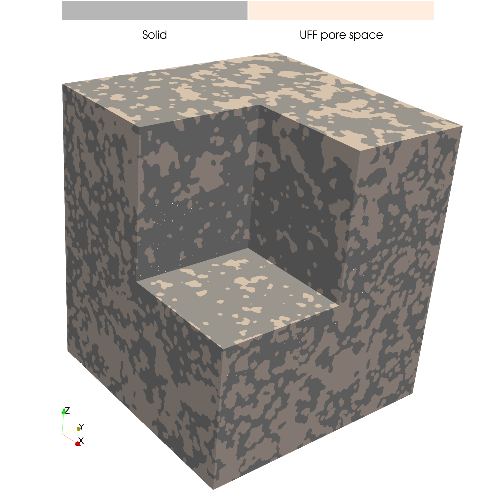
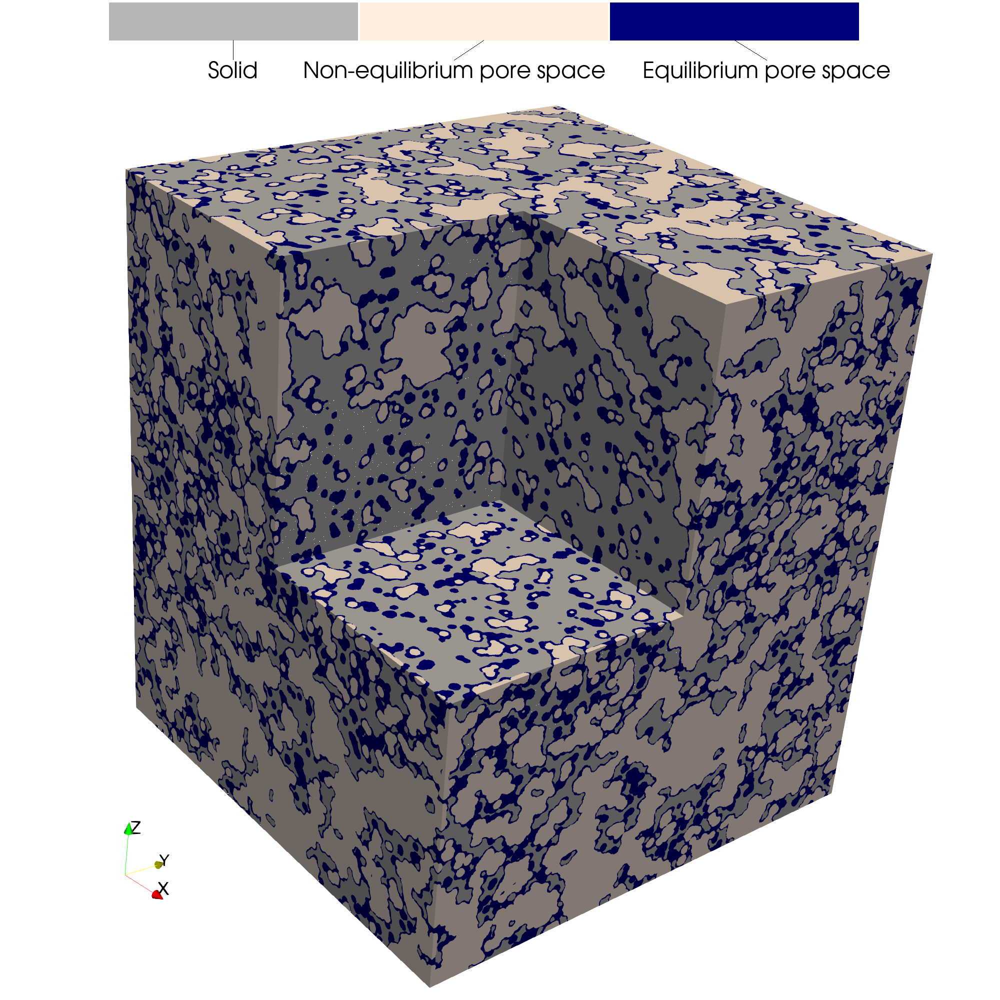
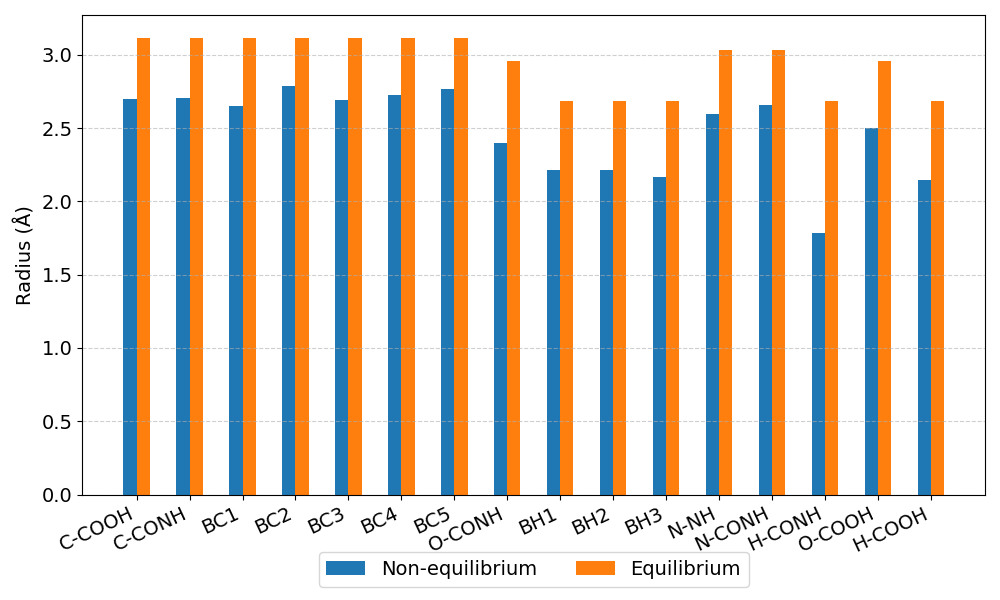

Porous Structure from Molecular Dynamics Simulations
This example demonstrates how to generate a porous structure from molecular dynamics (MD) simulations using two approaches to determine atomic radii:
Non-equilibrium radii, derived from the radial distribution function (RDF) computed during non-equilibrium MD simulations.
Equilibrium radii estimated from the Columbic radius of water by the Universal Force Field (UFF).
This example uses MD simulation data [6] of water permeation through a polyamide reverse osmosis membrane that consists of M-phenylenediamine (MPD), trimesoyl chloride (TMC), and water.
To run:
mpirun -np 8 python examples/md_porous_media/md_porous_media.py
Step 1: Import Modules
from mpi4py import MPI
import pmmoto
Step 2: Initialize MD Domain
The input parameters for PMMoTo match the MD simulation parameters. To initialize PMMoTo, the following parameters must be specified for this example:
voxels: the number of voxels in each dimension for the image representing the porous structurebox: the physical size of the simulation domainrank: the MPI rank of the current processsubdomains: the number of subdomains in each dimensionboundary_types: the boundary conditions applied during the simulationverlet_domains: the number of Verlet domains for eachSubdomaininletandoutlet: the designated inflow and outflow faces
Note
verlet_domains specify how to subdivide a subdomain into smaller regions to optimize domain generation by reducing the number of particles or atoms that must be checked during computations. Conducting a numerical study to determine the optimal number of Verlet domains can significantly reduce compute times for systems with a large number of atoms. Note that the optimal value depends on the hardware and computational environment.
def initialize_domain(voxels: tuple[int, ...]):
"""Initialize the membrane domain"""
subdomains = (2, 2, 2)
# Full domain with reservoirs
box = [
[0.0, 176],
[0.0, 176],
[-100, 100],
]
sd = pmmoto.initialize(
voxels=voxels,
box=box,
rank=rank,
subdomains=subdomains,
boundary_types=(
(pmmoto.BoundaryType.PERIODIC, pmmoto.BoundaryType.PERIODIC),
(pmmoto.BoundaryType.PERIODIC, pmmoto.BoundaryType.PERIODIC),
(pmmoto.BoundaryType.END, pmmoto.BoundaryType.END),
),
verlet_domains=(20, 20, 20),
inlet=((False, False), (False, False), (True, False)),
outlet=((False, False), (False, False), (False, True)),
)
return sd
Step 3: Equilibrium Radii
The equilibrium approach for reconstructing a porous structure from MD simulations uses the van der Waals surface, based on element-specific radii defined by the Universal Force Field (UFF) [7]. In the MD simulations in this work, four elements are needed to represent the MPD and TMC, namely carbon, nitrogen, oxygen, and hydrogen.
Additionally, as we are interested in water-accessible pathways, an additional 1.4 Å is added to each atom radius, accounting for the Columbic radius of water.
atom_folder is a text file with the following format:
- File Format:
atom_id, element_name, atom_name
Each line represents one atom, with:
atom_id: An integer ID corresponding to the atom in the simulation.element_name: The atomic symbol (e.g.,C,O,H,N).atom_name: A user-defined or simulation-specific atom label (e.g.,CA,OW).
def determine_uff_radii(atom_folder: str, radius: float):
"""Collect the radii given a pmf cutoff"""
atom_map = pmmoto.io.data_read.read_atom_map(atom_folder + "atom_map.txt")
radii = {}
for atom_id, atom_data in atom_map.items():
radii[atom_id] = (
list(pmmoto.particles.uff_radius(atom_names=atom_data["element"]).values())[
0
]
+ radius
)
return radii
Step 4: Non-equilibrium Radii
This example is based on a non-equilibrium MD simulation of water permeation through a reverse osmosis membrane. Using PMMoTo, distances between water molecules and the atoms comprising the polyamide were binned, and radial distribution functions (RDFs) were generated from the simulation data for the 17 unique atom types of MPD and TMC.
To reconstruct the porous structure of the membrane, the potential of mean force is calculated from the RDFs as:
The potential of mean force is provided at discrete distances, and linear interpolation is used to assign an effective radius for each unique atom type corresponding to a specified PMF threshold. This approach improves the physical relevance of the reconstructed porous structure.
def determine_pmf_radii(atom_folder, pmf_value):
"""Collect the radii given a pmf cutoff"""
_, rdf = pmmoto.io.data_read.read_binned_distances_rdf(atom_folder)
bounded_rdf = {}
for _id, _rdf in rdf.items():
bounded_rdf[_id] = pmmoto.domain_generation.rdf.BoundedRDF.from_rdf(
_rdf, eps=1.0e-3
)
pmf_radii = {}
for atom_id, _rdf in bounded_rdf.items():
pmf_radii[atom_id] = _rdf.interpolate_radius_from_pmf(pmf_value)
return pmf_radii
Step 5: Water Accessible Porous Structure
The function gen_pm_atom_file is used to generate the porous structure from atom coordinates and atom radii by treating the atoms as spheres. THe input to the function includes the Subdomain object, an input file specifying the atom location (and other identifying information), the atom radii to be used, and any additional information needed to map from the MD output files to atom ids.
pm = pmmoto.domain_generation.gen_pm_atom_file(
subdomain=sd,
lammps_file=membrane_file,
atom_radii=radii,
type_map=atom_id_charge_map,
...
)
Step 5: Water Occupiable Porous Structure
In this example, the Columbic radius of water was added to the equilibrium approach and the non-equilibrium approach radii accounted for water as well, but in a data driven manner. To determine the water occupiable porous structure, a morphological dilation (or addition) is performed on the pore space bu calling the dilate function and proving the Subdomain object, the image of the porous structure, and the radius use for the dilation.
pm.img = pmmoto.filters.morphological_operators.dilate(sd, pm.img, 1.4)
Step 6: Comparison of Approaches
The equilibrium approach reconstruction the porous structure where atoms are only differentiated by element type:
{kind=link}
In contrast, the non-equilibrium approach uses atom radii derived from radial distribution functions and the potential of mean force (PMF). In this example, a PMF threshold of G = 17 is used which is near the upper bound of observed data and represents a highly porous structure.
{kind=link}
For direct visual comparison, the two reconstructions are shown side-by-side:
{kind=link}
The bar chart below compares the radii for each atom type used in the two methods.
{kind=link}
Output
The expected output from a successful run is:
image.pvtiand a folderimage_procwith eight.vtifiles, all of which can be opened in Paraviewradii_comparison.pngA bar plot comparing the atom radii for the two methods.
The code used to generate the plots in this example is located at examples/connected_pathways/plot_connected_pathways.py and must be run with pvpython, ParaView’s Python interpreter.